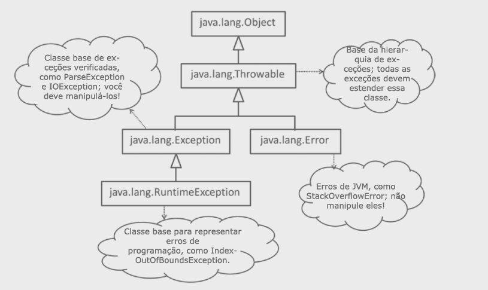
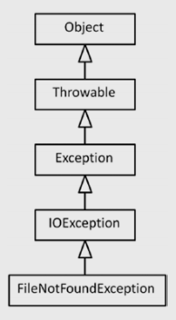
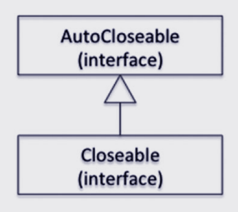

JAVA SE 8
Exceções e Assertions
Em Java, o objeto lançado deve ser uma instância da classe Throwable ou uma de suas subclasses (Throwable é a classe do apex da hierarquia de exceções em Java). Construções de manipulação de exceção, como a declaração throw, cláusula throws , e cláusula catch lidam apenas com Throwable e suas subclasses. Existem três importantes subclasses de Throwable que você precisa aprender em detalhes: o Error, Exception, e Classes RuntimeException.
Aqui está uma breve descrição das três classes importantes que estendem a classe Throwable:
- 1-Exceções do tipo Exception são conhecidas como exceções verificadas. Se o código pode lançar uma exceção, você deve manipulá-lo usando um bloco catch ou declarar que o método lança essa exceção, forçando o chamador desse método para manipular essa exceção.
- 2- RuntimeException é uma classe derivada da classe Exception. As exceções derivadas dessa classe são conhecidas como exceções não verificadas. É opcional para lidar com exceções não verificadas. Se um segmento de código que você escrever em um método puder lançar uma exceção não verificada, não é obrigatório capturar essa exceção ou declarar essa exceção na cláusula throws desse método.
- 3- Quando a JVM detecta uma condição anormal grave no programa, ela gera uma exceção do tipo Error. Exceções do tipo Error indica uma condição anormal no programa. Não há sentido em pegar essa exceção e tentar continuar a execução e fingir que nada aconteceu. É uma prática realmente ruim fazer isso!
Agora, vamos começar a discutir como lançar e capturar exceções.
Lançando Exceções
Este é um exemplo de programação muito simples em que você deseja repetir o texto digitado como argumentos da linha de comando de volta ao usuário. Suponha que o usuário deve digitar algum texto como argumentos de linha de comando para fazer echo ou, caso contrário, você precisará informar o usuário sobre a "condição de erro".
// Echo.java
// Um programa simples sem exceção manipulando o código
class Echo {
public static void main(String [] args) {
if(args.length == 0) {
// no arguments passed – display an error to the user
System.out.println("Error: No input passed to echo command... ");
System.exit(-1);
}
else {
for(String str : args) {
// argumentos linha de comando são separados e passado como um array
// imprimi-lo por adcionar um espaço elementos do array
System.out.print(str + " ");
}
}
}
}
Nesse caso, você imprime o erro no console usando uma declaração println(). Este é um programa trivial e o erro ocorreu no método main(), portanto, o tratamento de erros é fácil. Nesse caso, você pode finalizar o programa depois de imprimir a mensagem de erro no console. No entanto, se você estiver dentro das chamadas de função em um aplicativo complexo, precisará de uma maneira melhor de indicar que uma “condição excepcional” ocorreu e informar o chamador sobre essa condição. Além disso, você geralmente precisa se recuperar de uma condição de erro em vez de terminar o programa. Portanto, você precisa ser capaz de “manipular” uma exceção ou “voltar a” essa exceção mais adiante na pilha de chamadas para que um chamador possa lidar com essa exceção.No momento, você irá alterar o programa anterior para lançar uma exceção em vez de imprimir uma mensagem de erro (em um programa separado, Echo1.java), igual a:
if(args.length == 0) {
// sem argumentos passado - lança uma exceção
throw new IllegalArgumentException("No input passed to echo command");
}
Este bloco dentro da condição if para args.length == 0 é a única parte que precisa ser alterada dentro deste programa. Observe a sintaxe para lançar uma exceção: a palavra-chave throw seguida pelo objeto de exceção. Aqui você usa IllegalArgumentException, que já está definido na biblioteca Java. Mais adiante, você verá como definir suas próprias exceções.
Agora, se você executar este programa sem passar nenhum argumento na linha de comando, o programa lançará um IllegalArgumentException:
Exception in thread "main" java.lang.IllegalArgumentException: No input passed to echo command at Echo1.main(Echo1.java:5)
Como não havia manipulador para essa exceção, essa exceção não detectada encerrou o programa. Nesse caso, você explicitamente lançou uma exceção. Exceções também podem ser executadas quando você escreve algum código ou chama APIs Java. Vamos ver um exemplo agora.
Execeções não manipuladas
Considere o programa a seguir, que tenta ler um valor inteiro que o usuário digita no console e imprime o inteiro lido de volta ao console. Para ler um inteiro do console, você faz uso do método nextInt() fornecido na classe java.util.Scanner. Para instanciar a classe Scanner, você passa em System.in, que é uma referência ao fluxo de entrada do sistema.
// ScanInt1.java
// Um programa simples para aceitar um inteiro do usuário
import java.util.Scanner;
class ScanInt1 {
public static void main(String [] args) {
System.out.println("Type an integer in the console: ");
Scanner consoleScanner = new Scanner(System.in);
System.out.println("You typed the integer value: " + consoleScanner.nextInt());
}
}
Quando você executa este programa e digita um inteiro, digamos 10, no console, o programa funciona corretamente e imprime o inteiro de volta para você com êxito.
D:\> java ScanInt1 Type an integer in the console: 10 You typed the integer value: 10
No entanto, e se você (ou o usuário do programa) digitar equivocadamente a string “dez” em vez do valor inteiro “10”? O programa terminará depois de lançar uma exceção como esta:
D:\> java ScanInt1 Type an integer in the console: ten Exception in thread "main" java.util.InputMismatchException at java.util.Scanner.throwFor(Scanner.java:909) at java.util.Scanner.next(Scanner.java:1530) at java.util.Scanner.nextInt(Scanner.java:2160) at java.util.Scanner.nextInt(Scanner.java:2119) at ScanInt.main(ScanInt1.java:7)
Se você ler a documentação do nextInt(), verá que esse método pode lançar InputMismatchException - “se o próximo token não corresponder à expressão regular Integer, ou estiver fora do intervalo.” Neste programa simples, você assume que (ou o usuário) sempre digitará um valor inteiro conforme o esperado e, quando essa suposição falhar, será lançada uma exceção. Se houver uma exceção lançada de um programa e não for tratada, o programa terminará de forma anormal depois de lançar um rastreamento de pilha como os mostrados aqui.
Um rastreamento de pilha mostra a lista do método (com os números de linha) que foi chamado antes que o controle atingisse a instrução onde a exceção foi lançada. Como programador, você achará útil rastrear o fluxo de controle para depurar o programa e corrigir o problema que levou a essa exceção.
Então, como você lida com essa situação? Você precisa colocar esse código dentro dos blocos try e catch e, em seguida,lidar com a exceção.
Declaração Try e Catch
Java fornece as palavras-chave try e catch para manipular quaisquer exceções que possam ser lançadas no código que você escreve.
//ScanInt2.java
// Um programa simples para aceitar um número inteiro do usuário no caso normal,
// caso contrário, imprime uma mensagem de erro
import java.util.Scanner;
import java.util.InputMismatchException;
class ScanInt2 {
public static void main(String [] args) {
System.out.println("Type an integer in the console: ");
Scanner consoleScanner = new Scanner(System.in);
try {
System.out.println("You typed the integer value: " + consoleScanner.nextInt());
} catch(InputMismatchException ime) {
// nextInt () lança InputMismatchException no caso de algo
// diferente de um número inteiro é digitado no console; então manipule isso
System.out.println("Error: You typed some text that is not an integer value...");
}
}
}
Se algo diferente de um inteiro válido é digitado na entrada, este programa imprime uma mensagem de erro legível para o usuário.
D:\> java ScanInt2 Type an integer in the console: ten Error: You typed some text that is not an integer value...
Agora vamos analisar esse código. O bloco seguido pela palavra-chave try limita o segmento de código para o qual você espera que algumas exceções possam ser lançadas. Se alguma exceção for lançada do bloco try, o Java runtime procurará um manipulador correspondente (que discutiremos mais detalhadamente mais adiante). Nesse caso, um manipulador de exceção para InputMismatchException está presente, que é exatamente o mesmo tipo da exceção que foi lançada. Este manipulador exatamente correspondente está disponível fora do bloco try na forma de um bloco precedido pela palavra-chave catch, e este bloco catch é executado. No bloco catch você pegou a exceção, por isso você está lidando com a exceção aqui. Você está fornecendo uma string de erro legível em vez de gerar um rastreio de pilha bruta (como você fez no programa anterior ), agora você está oferecendo uma saída elegante para o programa.
Múltiplos Blocos Catch
Você usou um objeto Scanner para ler um inteiro do console. Note que você pode usar um objeto Scanner para ler uma String.
//ScanInt3.java
// Um programa que varre um número inteiro de uma determinada string
import java.util.Scanner;
import java.util.InputMismatchException;
class ScanInt3 {
public static void main(String [] args) {
String integerStr = "100";
System.out.println("The string to scan integer from it is: " + integerStr);
Scanner consoleScanner = new Scanner(integerStr);
try {
System.out.println("The integer value scanned from string is: " +
consoleScanner.nextInt());
} catch(InputMismatchException ime) {
// nextInt () lança InputMismatchException no caso
// qualquer coisa que não seja um número inteiro é fornecida na string
System.out.println("Error: Cannot scan an integer from the given string");
}
}
}
Este programa imprime o seguinte:
The string to scan integer from it is: 100 The integer value scanned from string is: 100
O que acontece se você modificar o programa anterior para que a string contenha um valor não inteiro, como em:
String integerStr = "hundred";
O bloco try lançará um InputMismatchException, que será tratada no bloco catch, e você obterá esta saída:
The string to scan integer from it is: hundred Error: Cannot scan an integer from the given string
Agora, e se você modificar o programa para que a string contenha uma string vazia, como em:
String integerStr = "";
Para isso, nextInt() lançará um NoSuchElementException, que não é tratado neste programa, portanto, esse programa falharia:
The string to scan integer from it is: Exception in thread "main" java.util.NoSuchElementException at java.util.Scanner.throwFor(Scanner.java:907) at java.util.Scanner.next(Scanner.java:1530) at java.util.Scanner.nextInt(Scanner.java:2160) at java.util.Scanner.nextInt(Scanner.java:2119) at ScanInt3.main(ScanInt.java:11)
Além disso, se você observar o método JavaDoc para Scanner.nextInt(), verá que também pode lançar uma IllegalStateException (essa exceção será lançada se o método nextInt() for chamado em um objeto Scanner que já esteja fechado). Então, vamos fornecer manipuladores de captura para InputMismatchException, NoSuchElementException e IllegalStateException.
//ScanInt4.java
// Um programa que varre um inteiro de uma string fornecida string
import java.util.Scanner;
import java.util.InputMismatchException;
import java.util.NoSuchElementException;
class ScanInt4 {
public static void main(String [] args) {
String integerStr = "";
System.out.println("The string to scan integer from it is: " + integerStr);
Scanner consoleScanner = new Scanner(integerStr);
try {
System.out.println("The integer value scanned from string is: " +
consoleScanner.nextInt());
} catch(InputMismatchException ime) {
System.out.println("Error: Cannot scan an integer from the given string");
} catch(NoSuchElementException nsee) {
System.out.println("Error: Cannot scan an integer from the given string");
} catch(IllegalStateException ise) {
System.out.println("Error: nextInt() called on a closed Scanner object");
}
}
}
Aqui está a saída deste programa:
The string to scan integer from it is: Error: Cannot scan an integer from the given string
Como você pode ver na saída, como a string está vazia, NoSuchElementException é lançado. Ele é capturado no manipulador catch para essa exceção, e o código fornecido dentro do bloco catch é executado para resultar em uma saída normal.
Observe como você forneceu mais de um manipulador de captura empilhando-os: você forneceu manipuladores de exceção específicos (ou seja, tipo derivado) seguidos por manipuladores de exceção mais genéricos (por exemplo, tipo de base). Se vocês fornecerem um tipo de exceção derivada após um tipo de exceção de base, você obtém um erro do compilador. Você pode ainda não sabe, mas NoSuchElementException é a classe base de InputMismatchException! Veja o que acontece quando você tenta inverter a ordem de manipuladores de captura para InputMismatchException e NoSuchElementException.
try {
System.out.println("The integer value scanned from string is: "
+ consoleScanner.nextInt());
} catch(NoSuchElementException nsee) {
System.out.println("Error: Cannot scan an integer from the given string");
} catch(InputMismatchException ime) {
System.out.println("Error: Cannot scan an integer from the given string");
}
Este código resulta neste errode compilador:
ScanInt4.java:14: error: exception InputMismatchException has already been caught
} catch(InputMismatchException ime) {
^
1 error
Blocos Multi-Catch
Java fornece um recurso chamado blocos de múltiplas capturas, no qual você pode combinar vários manipuladores de captura. Vamos usar esse recurso para combinar as cláusulas catch de NoSuchElementException e IllegalStateException.
//ScanInt5.java
// Um programa que ilustra blocos multi-catch
import java.util.Scanner;
import java.util.NoSuchElementException;
class ScanInt5 {
public static void main(String [] args) {
String integerStr = "";
System.out.println("The string to scan integer from it is: " + integerStr);
Scanner consoleScanner = new Scanner(integerStr);
try {
System.out.println("The integer value scanned from string is: " +
consoleScanner.nextInt());
} catch(NoSuchElementException | IllegalStateException multie) {
System.out.println("Error: An error occured while attempting to scan the integer");
}
}
}
Observe como você combina os manipuladores de captura juntos usando o | Operador(OU) aqui (o mesmo operador que você usa para executar operação OU ou bit-wise em valores integrais) para combinar as cláusulas catch do NoSuchElementException e IllegalStateException.
Ao contrário das cláusulas catch combinadas para NoSuchElementException e IllegalStateException, você não pode combinar as cláusulas catch de NoSuchElementException e InputMismatchException. Como já discutimos, NoSuchElementException é a classe base de InputMismatchException, e você não pode capturar os dois no bloco multi-catch. Se você tentar compilar essa cláusula de multi-catch, receberá este erro do compilador:
ScanInt5.java:11: error: Alternatives in a multi-catch statement cannot be related by
subclassing
} catch(InputMismatchException | NoSuchElementException exception) {
^
Então, qual é a alternativa? Quando você precisar de um manipulador de captura para as exceções em que uma exceção é a classe base de outra classe de exceção, fornecer o manipulador de captura para a classe base é suficiente (desde que esse manipulador manipulará a exceção de classe derivada se ocorrer).
em um bloco multi-catch, você não pode combinar manipuladores de captura para duas exceções que compartilham um relacionamento de classe base e derivada. Você só pode combinar manipuladores de captura para exceções que não compartilham o relação pai-filho entre eles.
Como você sabe se é melhor combinar blocos de manipulação de exceção ou empilhá-los? É uma escolha de design onde você deve considerar os seguintes aspectos: (a) As exceções são lançadas por razões semelhantes? ou por diferentes razões? (b) O código de manipulação é semelhante ou diferente? Se você responder “similar” para ambas as perguntas, é melhor combiná-las; Se você disser "diferente" para qualquer uma dessas duas perguntas, é melhor separá-las.
Ainda sobre a situação específica anterior? É melhor combinar ou separar os manipuladores para as execeções InputMismatchException e IllegalStateException? Você pode ver que o tratamento de exceção é o mesmo para ambos os blocos catch. Mas as razões para essas duas exceções são consideravelmente diferentes. A entrada inválida InputMismatchException lançada é passada (por exemplo, “cem” como discutimos anteriormente).
O IllegalStateException é lançado devido a um erro de programação quando você chama o método nextInt() depois de chamar o método close() no Scanner. Então, neste caso, é uma escolha de design melhor para separar os manipuladores para essas duas exceções.
Manipuladores Gerais de Captura
Se você mantiver manipular exceções específicas como esta que podem ou não resultar em uma condição excepcional quando você executar o programa, a maior parte do seu código consistirá em blocos de código try-catch! Existe uma maneira melhor de dizer "lidar com todas as outras exceções"? Sim, você pode fornecer um manipulador de exceção geral.
Aqui está o trecho de código que mostra apenas os blocos try-catch para a classe ScanInt3, aprimorada com um manipulador de exceção geral:
try {
System.out.println("You typed the integer value: " + consoleScanner.nextInt());
} catch(InputMismatchException ime) {
// se algo diferente de inteiro for digitado, obteremos essa exceção, então manipule isso
System.out.println("Error: You typed some text that is not an integer value...");
} catch(Exception e) {
// captura IllegalStateException aqui, que é improvável que ocorra ...
System.out.println("Error: Encountered an exception and could not read an integer from
the console... ");
}
Esse código fornece um manipulador catch para a exceção base do tipo Exception. Portanto, se o bloco try lançar qualquer outra exceção que InputMismatchException, e se essa exceção for uma classe derivada da classe Exception, esse manipulador de captura geral a manipulará. Recomenda-se a prática para capturar exceções específicas e, em seguida, fornecer um manipulador de exceção geral para garantir que todas as outras exceções também sejam tratadas.
Liberando recursos
Você percebe que os programas que discutimos anteriormente têm vazamento de recursos (porque abrimos um objeto Scanner, mas não o fechamos)? A palavra "recurso" refere-se a qualquer uma das classes que adquirem algumas fontes do sistema a partir do sistema operacional subjacente, como rede, arquivo, banco de dados e outras alças. Mas como você sabe quais classes precisam ser fechadas? A resposta é que, se uma classe implementar java.io.Closeable, você deverá chamar o método close() dessa classe; caso contrário, isso resultará em um vazamento de recursos.
O Garbage Collector (GC) é responsável por liberar apenas recursos de memória. Se você estiver usando qualquer classe que adquira recursos do sistema, é sua responsabilidade liberá-los chamando o método close() nesse objeto.
O ScanInt6 chama o método close() do objeto Scanner em seu método main(); Se você quiser encurtar o código, use um manipulador de exceção geral para lidar com todas as exceções que podem ser lançadas no bloco try.
//ScanInt6.java
import java.util.Scanner;
class ScanInt6 {
public static void main(String [] args) {
System.out.println("Type an integer in the console: ");
Scanner consoleScanner = new Scanner(System.in);
try {
System.out.println("You typed the integer value: " + consoleScanner.nextInt());
System.out.println("Done reading the text... closing the Scanner");
consoleScanner.close();
} catch(Exception e) {
// chamar todas outras exceptions aqui ...
System.out.println("Error: Encountered an exception and could not read an
integer from the console... ");
System.out.println("Exiting the program - restart and try the program again!");
}
}
}
Vamos ver se este programa funciona.
D:\> java ScanInt6 Type an integer in the console: 10 You typed the integer value: 10 Done reading the text... closing the Scanner
Porque o programa imprimiu "Done reading the text... closing the Scanner", e completou a execução normalmente, você pode assumir que a instrução consoleScanner.close(); foi executado com sucesso. O que acontece se uma exceção for lançada?
D:\> java ScanInt6 Type an integer in the console: ten Error: Encountered an exception and could not read an integer from the console... Exiting the program - restart and try the program again!
Como você pode ver na saída, o programa não imprimiu "Done reading the text... closing the Scanner", então a instrução consoleScanner.close(); não foi executada. Como você pode consertar isso? Uma maneira é chamar consoleScanner.close() no bloco catch, assim:
try {
System.out.println("You typed the integer value: " + consoleScanner.nextInt());
System.out.println("Done reading the text... closing the Scanner");
consoleScanner.close();
} catch(Exception e) {
// chama todas outras exceptions aqui...
consoleScanner.close();
System.out.println("Error: Encountered an exception and could not read an integer from
the console... ");
System.out.println("Exiting the program - restart and try the program again!");
}
Essa solução funcionará, mas não é elegante. Você sabe que pode ter vários blocos catch e precisa fornecer chamadas para consoleScanner.close() em todos os blocos catch! Existe uma maneira melhor de liberar os recursos? Sim, você pode usar recursos de liberação em um bloco finally.
//ScanInt7.java
import java.util.Scanner;
class ScanInt7 {
public static void main(String [] args) {
System.out.println("Type an integer in the console: ");
Scanner consoleScanner = new Scanner(System.in);
try {
System.out.println("You typed the integer value: " + consoleScanner.nextInt());
} catch(Exception e) {
// chama todas outras exceptions aqui ...
System.out.println("Error: Encountered an exception and could not read an integer from the console... ");
System.out.println("Exiting the program - restart and try the program again!");
} finally {
System.out.println("Done reading the integer... closing the Scanner");
consoleScanner.close();
}
}
}
Nesse caso, um bloco finally é fornecido após o bloco catch. Este bloco finally será executado se uma exceção ocorreu ou não. Então, o bloco finally é um bom lugar para chamar o método close()no objeto Scanner para garantir que este recurso esteja sempre liberado.
se você chamar System.exit() dentro de um método, terminará anormalmente o programa. Portanto, se o método de chamada tiver um bloco finally, ele não será chamado e os recursos poderão vazar. Por esse motivo, é uma prática de programação ruim chamar System.exit() para finalizar um programa.
Agora, vamos ver se o scanner está fechado no caso em que o programa é concluído normalmente (ou seja, sem gerar uma exceção) e quando o programa termina após gerar uma exceção.
D:\> java ScanInt7 Type an integer in the console: 10 You typed the integer value: 10 Done reading the integer... closing the Scanner
D:\> java ScanInt7 Type an integer in the console: ten Error: Encountered an exception and could not read an integer from the console... Exiting the program - restart and try the program again! Done reading the integer... closing the Scanner
Sim, a declaração "Done reading the integer ... closing the Scanner" é chamada se uma exceção é lançada ou não. Note que você pode ter um bloco finally diretamente após um bloco try sem um bloco catch também; embora esse recurso seja usado raramente, é um recurso útil. Observação: o bloco finally é sempre executado, independentemente de o código no bloco try gerar uma exceção ou não. Considere o seguinte método. Isso retornará verdadeiro ou falso para o chamador?
boolean returnTest() {
try {
return true;
}
finally {
return false;
}
}
Esse método sempre retornará false porque finalmente é sempre invocado, embora não seja intuitivo. Na verdade, se você usar a opção "-Xlint", receberá este aviso do compilador: "a cláusula finally não pode ser concluída normalmente". (Note que você pode ter um bloco try seguido por um bloco catch ou por bloco finally ou ambos os blocos.)
A cláusula Throw
Um método pode lançar exceções verificadas; A cláusula throw especifica essas exceções verificadas na assinatura do método. Na cláusula throws, você lista as exceções verificadas que um método pode lançar. Por que precisamos da cláusula throws? Observando a cláusula throws, você pode ter uma ideia clara das exceções que o método pode lançar. Compreender as exceções verificadas é um pré-requisito para entender a cláusula throws. Como cobrimos as exceções verificadas na seção anterior sobre tipos de exceção, abordaremos a cláusula de lançamentos agora. Vamos tentar ler um número inteiro armazenado em um arquivo chamado integer.txt no diretório atual. Há um construtor sobrecarregado da classe Scanner que usa um objeto de arquivo como entrada, portanto, vamos tentar usá-lo. Vamos ver se dá certo:
//ThrowsClause1.java
import java.io.File;
import java.util.Scanner;
class ThrowsClause1 {
public static void main(String []args) {
System.out.println("Reading an integer from the file 'integer.txt': ");
Scanner consoleScanner = new Scanner(new File("integer.txt"));
System.out.println("You typed the integer value: " + consoleScanner.nextInt());
}
}
Esse código resultará em um erro do compilador de "unreported exception FileNotFoundException; must be caught or declared to be thrown" Se você observar a declaração desse método do Scanner, verá uma cláusula de lançamento:
public Scanner(File source) throws FileNotFoundException {}
Portanto, qualquer método que chame esse construtor deve manipular essa exceção ou incluir uma cláusula throws para declarar que o método pode lançar essa exceção. Adicione uma cláusula throws ao método main();
//ThrowsClause2.java
import java.io.File;
import java.io.FileNotFoundException;
import java.util.Scanner;
class ThrowsClause2 {
public static void main(String []args) throws FileNotFoundException {
System.out.println("Reading an integer from the file 'integer.txt': ");
Scanner consoleScanner = new Scanner(new File("integer.txt"));
System.out.println("You typed the integer value: " + consoleScanner.nextInt());
}
}
Se você executar este programa e não houver nenhum arquivo chamado integer.txt, o programa irá travar depois de lançar essa exceção:
Reading an integer from the file 'integer.txt': Exception in thread "main" java.io.FileNotFoundException: integer.txt (The system cannot find the file specified) at java.io.FileInputStream.open(Native Method) at java.io.FileInputStream.< init >(FileInputStream.java:138) at java.util.Scanner.< init >(Scanner.java:656) at ThrowsClause2.main(ThrowsClause2.java:7)
Vamos agora extrair o código dentro do método main() para um novo método chamado readIntFromFile(). Você definiu como um método de instância, então você também cria um objeto da classe ThrowsClause3 para invocar esse método a partir do método main(). Como o código dentro de readIntFromFile() pode lançar um FileNotFoundException, ele deve introduzir um manipulador de captura para manipular essa exceção ou declarar essa exceção em sua cláusula throws:
//ThrowsClause3.java
import java.io.File;
import java.io.FileNotFoundException;
import java.util.Scanner;
class ThrowsClause3 {
// como esse método não trata FileNotFoundException,
// o método deve declarar essa exceção na cláusula throws
public int readIntFromFile() throws FileNotFoundException {
Scanner consoleScanner = new Scanner(new File("integer.txt"));
return consoleScanner.nextInt();
}
// desde que readIntFromFile() lança FileNotFoundException e main() não manipula
//, o método main() declara essa exceção em sua cláusula throws
public static void main(String []args) throws FileNotFoundException {
System.out.println("Reading an integer from the file 'integer.txt': ");
System.out.println("You typed the integer value: " + new ThrowsClause3().readIntFromFile());
}
}
O comportamento do programa permanece o mesmo em ambas ThrowsClause1 e ThrowsClause2. No entanto, o ThrowsClause3 mostra como o método main() também deve declarar para lançar o FileNotFoundException em sua cláusula throws (caso contrário, o programa não será compilado).
Métodos Sobrescrito e a Clausula Throws( Lançamento)
Quando um método substituível possui uma cláusula throws, há muitas coisas a considerar ao sobrescrever esse método. Considere o programa na ThrowsClause4 , que implementa uma interface denominada IntReader.Essa interface declara um único método chamado readIntFromFile () com a cláusula throws listando um FileNotFoundException.
//ThrowsClause4.java
import java.io.File;
import java.io.FileNotFoundException;
import java.io.IOException;
import java.util.Scanner;
// Essa interface é destinada a implementada por classes que lêem um número inteiro de um arquivo
interface IntReader {
int readIntFromFile() throws IOException;
}
class ThrowsClause4 implements IntReader {
// implementa readIntFromFile com a mesma cláusula throws
// ou uma cláusula throws mais específica
public int readIntFromFile() throws FileNotFoundException {
Scanner consoleScanner = new Scanner(new File("integer.txt"));
return consoleScanner.nextInt();
}
// método principal escolhido neste código, pois o foco aqui é entender
// problemas relacionados à sobrescrever quando a cláusula throws estiver presente
}
Neste código, você pode observar alguns fatos importantes:
- Você pode declarar a cláusula throws para métodos declarados em interfaces; Na verdade, você também pode fornecer a cláusula throws para métodos abstratos declarados em classes abstratas.
- O método declarado na interface IntReader declara lançar IOException, que é uma exceção mais geral do que um FileNotFoundException. Ao implementar um método, é aceitável fornecer a cláusula throws listando o mesmo tipo de exceção que o método base ou um tipo mais específico do que o método base. Nesse caso, o método readIntFromFile() lista uma exceção mais específica (FileNotFoundException) em sua cláusula throws contra a exceção mais geral de IOException listada na cláusula throws do método base declarado na interface IntReader.

Acima a hierarquia da classe FileNotFoundException.
E se você tentar mudar a cláusula throws? Há muitas maneiras de alterar a cláusula throws no método de substituição, incluindo o seguinte:
- a. Listando mais exceções gerais verificadas para lançar.
- b. Listando mais exceções verificadas além das exceções verificadas fornecidas no método base.
Se você tentar algum desses casos, receberá um erro do compilador. Por exemplo, se você fornecer uma exceção mais geral do que a especificada na classe base, isso resultará em um erro do compilador. Você pode optar por não especificar nenhuma exceção usando a cláusula throws no método sobrescrito, desde que o método sobrescrito não lance nenhuma exceção verificada ou, se o fizer, forneça um bloco try-catch.
Para resumir, a cláusula throws do método da classe base é um contrato que ele fornece ao responsável pela chamada desse método: ele diz que o chamador deve manipular as exceções listadas ou declarar essas exceções em sua cláusula throws. Ao sobrescrever o método base, o método derivado também deve aderir a esse contrato. O responsável pela chamada do método base está preparado para manipular somente as exceções listadas no método base, portanto, o método que sobrescreve não pode lançar mais geral ou diferente das exceções verificada listadas.
No entanto, observe que esta discussão de que a cláusula throws da classe derivada da classe deve seguir o contrato para a cláusula throws do método base está limitada a exceções verificadas. Exceções não verificadas ainda podem ser adicionadas ou removidas do contrato quando comparadas à cláusula throws do método da classe base. Por exemplo, considere o seguinte:
public int readIntFromFile() throws IOException, NoSuchElementException {
Scanner consoleScanner = new Scanner(new File("integer.txt"));
return consoleScanner.nextInt();
}
Esta é uma cláusula throws aceitável, uma vez que NoSuchElementException pode ser lançada a partir do método readIntFromFile(). Essa exceção é uma exceção não verificada e é lançada quando o método nextInt() não pôde ler um número inteiro do arquivo. Esta é uma situação comum, por exemplo, se você tiver um arquivo vazio chamado integer.txt; uma tentativa de ler um inteiro deste arquivo resultará nessa exceção.
TAG @THROWS
É uma boa prática usar a tag Javadoc @throws (ou sua marca @exception sinônima) para documentar as situações ou casos específicos nos quais uma exceção (não verificada ou marcada) pode ser lançada de um método. Aqui está o formato para fornecer a tag @throws com um exemplo:
@throws exception-name description-text @throws IllegalStateException if this scanner is closed
Essa tag pode ser usada apenas para métodos e construtores.
Aqui está um exemplo de comentário de Javadoc para o método nextInt() na classe Scanner:
/** * Scaneia o próximo token da entrada como um int. * *Uma invocação deste método do formulário * nextInt() se comporta exatamente da mesma maneira que a * invocação nextInt(radix), onde
radix* é a raiz padrão deste scanner. * * @return o int scaneado a partir da entrada * @throws InputMismatchException * se o próximo token não corresponder ao Integer * expressão regular ou está fora de alcance * @throws NoSuchElementException se a entrada estiver esgotada * @throws IllegalStateException se este scanner estiver fechado */ public int nextInt() { return nextInt(defaultRadix); }
Observe a tag @throws para InputMismatchException, NoSuchElementException e IllegalStateException. Quando um método pode lançar várias exceções, elas são listadas em ordem alfabética por convenção (como neste caso).
Encadeamento e Relançamento de Exceções
Você pode capturar exceções e envolvê-las em exceções mais genéricas e colocá-las mais acima na pilha de chamadas. Quando você captura uma exceção e cria uma exceção mais geral, pode reter a referência à exceção original; isso é chamado de encadeamento de exceções.
catch(LowLevelException lle) {
// quebra a exceção de baixo nível em uma exceção de nível superior;
// também, encadeie a exceção original à exceção lançada recentemente
throw new HighLevelException(lle);
}
Encadeamento de exceções é útil para fins de depuração. Ao obter uma exceção geral, você pode verificar se há uma exceção de nível inferior encadeada e tentar entender por que essa exceção de nível inferior ocorreu.
Try-With-Resources
É um erro bastante comum os programadores Java esquecerem de liberar recursos, mesmo no bloco finally. Além disso, se você está lidando com vários recursos, é tedioso lembrar de chamar o método close() no bloco finally. O recurso Try-with-resources (introduzido no Java 7) ajudará a tornar sua vida mais fácil.
//TryWithResources1.java
import java.util.Scanner;
class TryWithResources1 {
public static void main(String [] args) {
System.out.println("Type an integer in the console: ");
try(Scanner consoleScanner = new Scanner(System.in)) {
System.out.println("You typed the integer value: " + consoleScanner.nextInt());
} catch(Exception e) {
// captura todas outras exceptions aqui ...
System.out.println("Error: Encountered an exception and could not read an
integer from the console... ");
System.out.println("Exiting the program - restart and try the program again!");
}
}
}
Certifique-se de dar uma olhada na sintaxe do bloco try-with-resources.
try(Scanner consoleScanner = new Scanner(System.in)) {
Nesta declaração, você adquiriu os recursos dentro dos parênteses após a palavra-chave try, mas antes do bloco try. Além disso, no exemplo, você não fornece o bloco finally. O compilador Java traduzirá internamente esse bloco try-with-resources em um bloco try-finally (obviamente, o compilador manterá os blocos catch fornecidos). Você pode adquirir vários recursos no bloco try-with-resources. Tais declarações de aquisição de recursos devem ser separadas usando ponto e vírgula.
Você pode fornecer declarações try-with-resources sem captura explícita ou blocos finally? Sim! Lembre-se de que um bloco try pode ser associado a um bloco catch, a um bloco finally ou a ambos. Um bloco de declarações try-with-resources é expandido internamente para um bloco try-finally. Portanto, você pode fornecer uma declaração try-with-resources sem captura explícita ou blocos finally. O exemplo seguinte usa uma declaração try-with-resources sem qualquer captura explícita ou blocos finally.
//TryWithResources2.java
import java.util.Scanner;
class TryWithResources2 {
public static void main(String [] args) {
System.out.println("Type an integer in the console: ");
try(Scanner consoleScanner = new Scanner(System.in)) {
System.out.println("You typed the integer value: " + consoleScanner.nextInt());
}
}
}
Embora seja possível criar uma instrução try-with-resources sem captura explícita ou por fim, isso não significa que você deva fazer isso! Por exemplo, como esse código não possui um bloco catch, se você digitar alguma entrada inválida, o programa falhará.
D:\> java TryWithResources2 Type an integer in the console: ten Exception in thread "main" java.util.InputMismatchException at java.util.Scanner.throwFor(Scanner.java:864) at java.util.Scanner.next(Scanner.java:1485) at java.util.Scanner.nextInt(Scanner.java:2117) at java.util.Scanner.nextInt(Scanner.java:2076) at TryWithResources2.main(TryWithResources2.java:7)
Portanto, o benefício de uma instrução try-with-resources é que ela simplifica sua vida não tendo que fornecer blocos explicitamente. No entanto, você ainda precisa fornecer os blocos de captura necessários.
Observe que para um recurso ser utilizável com uma instrução try-with-resources, a classe desse recurso deve implementar a interface java.lang.AutoCloseable. Essa interface declara um único método chamado close(). Juntamente com o recurso try-with-resources, a interface AutoCloseable também foi introduzida no Java 7, e a interface é feita da interface base da interface Closeable. Isso é para garantir que as classes de recursos existentes funcionem perfeitamente com uma instrução try-with-resources. Em outras palavras, você pode usar todas as classes de fluxo antigas com try-with-resources porque elas implementam a interface AutoCloseable.

Interface Closable estende a interface AutoCloseable
Fechando Múltiplos Recursos
Você pode usar mais de um recurso em uma instrução try-with-resources. Aqui está um trecho de código para criar um arquivo zip de um determinado arquivo de texto que faz uso de uma instrução try-with-resources:
// buffer é o buffer de bytes temporário usado para copiar dados
// de um fluxo para outro fluxo
byte [] buffer = new byte[1024];
// these stream constructors can throw FileNotFoundException
try (ZipOutputStream zipFile = new ZipOutputStream(new FileOutputStream(zipFileName));
FileInputStream fileIn = new FileInputStream(fileName)) {
zipFile.putNextEntry(new ZipEntry(fileName)); // putNextEntry can throw
// IOException
int lenRead = 0; // a variável para acompanhar o número de bytes lidos com sucesso
// copia o conteúdo do arquivo de entrada no arquivo zip
while((lenRead = fileIn.read(buffer)) > 0) { // read can throw IOException
zipFile.write(buffer, 0, lenRead); // write can throw IOException
}
// os fluxos serão fechados automaticamente porque estão dentro do try-with-
// declaração de recursos
}
Nesse código, o buffer é um array> de bytes. Esse array é um armazenamento temporário útil para copiar dados brutos de um fluxo para outro. Na instrução try-with-resources, você abre dois fluxos: ZipOutputStream> para gravar no arquivo zip e FileInputStream para ler no arquivo de texto. (Nota: O suporte da API para arquivos zip (e jar) está disponível no pacote java.util.zip.) Você deseja ler o arquivo de texto de entrada, compactá-lo e colocar essa entrada no arquivo zip. Para colocar uma entrada de arquivo / diretório no arquivo zip, a classe ZipOutputStream fornece um método chamado putNextEntry(), que recebe um objeto ZipEntry como um argumento. A instrução zipFile.putNextEntry(new ZipEntry(fileName)), coloca uma entrada de arquivo chamado fileName no zipFile.
Para ler o conteúdo do arquivo de texto, use o método read() na classe FileInputStream. O método read() considera o buffer como o argumento. A quantidade de dados serem lidos por iteração(isto é, “tamanho do fragmento de dados” a ser lido) é dada pelo tamanho do array passado; são 1024 bytes neste código. O método read() retorna o número de bytes que lê e, se não houver mais dados para ler, retorna -1. O whileloop verifica se a leitura foi bem-sucedida (usando a condição > 0) antes de gravá-la no arquivo zip.
Para gravar dados no arquivo zip, use o método write() na classe ZipOutputStream. O método write() aceita três argumentos: o primeiro argumento é o buffer de dados; o segundo argumento é o deslocamento inicial no buffer de dados (que é 0 porque você sempre lê a partir do início do buffer); e o terceiro é o número de bytes a serem gravados.
Agora chegamos à discussão principal. Observe como você abre dois recursos no bloco try e os ponto-e-vírgulas separam essas duas instruções de aquisição de recursos. Você não tem um bloco finally explícito para liberar os recursos porque o compilador irá automaticamente inserir chamadas para os métodos de fechamento para esses dois fluxos no bloco finally(s).
O exemplo seguinte é o programa completo que faz uso desse segmento de código para ilustrar o uso da instrução try with-resources para o auto-fechamento de múltiplos fluxos.
//ZipTextFile.java
import java.util.*;
import java.util.zip.*;
import java.io.*;
// class ZipTextFile usa o nome de um arquivo de texto como entrada e cria um arquivo zip
// depois de compactar esse arquivo de texto.
class ZipTextFile {
public static final int CHUNK = 1024; // to help copy chunks of 1KB
public static void main(String []args) {
if(args.length == 0) {
System.out.println("Pass the name of the file in the current directory to be
zipped as an argument");
System.exit(-1);
}
String fileName = args[0];
// nome do arquivo zip é o nome do arquivo de entrada com o sufixo ".zip"
String zipFileName = fileName + ".zip";
byte [] buffer = new byte[CHUNK];
// esses construtores podem lançar FileNotFoundException
try (ZipOutputStream zipFile = new ZipOutputStream(new FileOutputStream(zipFileName));
FileInputStream fileIn = new FileInputStream(fileName)) {
// putNextEntry pode lançar IOException
zipFile.putNextEntry(new ZipEntry(fileName));
int lenRead = 0; // variável para acompanhar o número de bytes
// lido com sucesso
// copia o conteúdo do arquivo de entrada no arquivo zip
while((lenRead = fileIn.read(buffer)) > 0) {
// os métodos de leitura e gravação podem gerar IOException
zipFile.write (buffer, 0, lenRead);
}
// os fluxos serão fechados automaticamente porque são
// na instrução try-with-resources
}
// isso pode resultar em várias exceções lançadas no bloco try;
// use "exceções suprimidas" para obter as exceções que foram suprimidas!
catch(Exception e) {
System.out.println("The caught exception is: " + e);
System.out.print("The suppressed exceptions are: ");
for(Throwable suppressed : e.getSuppressed()) {
System.out.println(suppressed);
}
}
}
}
Já discutimos o bloco try-with-resources. O que não discutimos é exceções suprimidas. Em uma instrução try-with-resources, pode haver mais de uma exceção que poderia ser lançada; por exemplo, um dentro do bloco try, um dentro do bloco catch e outro dentro do bloco finally
.No entanto, apenas uma exceção pode ser detectada, portanto, as outras exceções serão listadas como exceções suprimidas. De um determinado objeto de exceção, você pode usar o método getSuppressed() para obter a lista de exceções suprimidas.
Exceções Personalizadas
Na maioria das situações, será suficiente lançar exceções que já são fornecidas na biblioteca Java. Por exemplo, se você estiver verificando a validade dos argumentos transmitidos a uma função pública e descobrir que eles são nulos ou fora do intervalo esperado, você poderá lançar uma exceção IllegalArgumentException. No entanto, para a maioria dos aplicativos não triviais, será necessário desenvolver suas próprias classes de exceção (exceções personalizadas) para indicar condições excepcionais. Como você define uma exceção personalizada? Existem duas opções: você pode estender a classe Exception ou RuntimeException dependendo da sua necessidade.
Se você quiser forçar os usuários de sua exceção personalizada a manipular a exceção, você poderá estender sua classe de exceção a partir da Classe de Exceção - o que tornará sua exceção personalizada uma exceção verificada. Se você deseja dar flexibilidade aos usuários de sua exceção personalizada e deixar que os usuários de sua exceção decidam se desejam manipular a exceção ou não, você poderá deduzir sua exceção da classe RuntimeException. Portanto, você precisa tomar uma decisão se quiser tornar sua exceção personalizada uma exceção verificada ou exceção não verificada, estendendo-se da classe Exception ou da classe RuntimeException.
Que tal estender a classe Throwable ou Error para exceções personalizadas? A classe Throwable é muito genérica para torná-la a classe base de sua exceção, portanto, ela não é recomendada. A classe Error é reservada para exceções fatais que a JVM pode lançar (como StackOverflowError), portanto, não é aconselhável torná-la a classe base de sua exceção.
Para estender a partir de uma classe base, você precisa ver quais métodos a classe base fornece. Nesse caso, você deseja criar uma exceção personalizada estendendo as classes Exception ou RuntimeException. Como a classe Exception é a classe base da classe RuntimeException, é suficiente conhecer os membros da classe Exception.
A seguir métodos e construtores importantes da classe Exception:
| Membros | Breve Descrição |
|---|---|
| Exception() | Construtor padrão da classe Exception sem informações adicionais (ou detalhadas) sobre a exceção. |
| Exception(String) | Construtor que usa uma sequência de informações detalhadas sobre o construtor como um argumento. |
| Exception(String, Throwable) | Além de uma sequência de informações detalhadas como um argumento, esse construtor de exceção leva a causa da exceção (que é outra exceção) como um argumento. |
| Exception(Throwable) | Construtor que leva a causa da exceção como um argumento. |
| String getMessage() | Retorna a mensagem detalhada (passada como uma string quando a exceção foi criada) |
| Throwable getCause() | Retorna a causa da exceção (se houver, ou então retorna null). |
| Throwable[] getSuppressed() | Retorna a lista de exceções suprimidas (geralmente causadas ao usar uma instrução try-with-resources) como um array. |
| void printStackTrace() | Imprime o rastreamento de pilha (ou seja, a lista de chamadas de método com números de linha relevantes) para o console (fluxo de erro padrão). Se a causa de uma exceção (que é outro objeto de exceção) estiver disponível na exceção, essa informação também será impressa. Além disso, se houver exceções suprimidas, elas também serão impressas. |
Para ilustrar como criar suas próprias classes de exceção, suponha que você queira criar uma exceção personalizada denominada InvalidInputException. Quando você tenta ler entrada (leia um inteiro, neste caso), e se ele falhar, você deseja lançar este InvalidInputException:
//InvalidInputException.java
// uma "exceção não verificada" personalizada que deve ser lançada
// quando a entrada fornecida pelo usuário é inválida
class InvalidInputException extends RuntimeException {
// construtor padrão
public InvalidInputException() {
super();
}
// construtor que recebe as informações detalhadas da String que passamos enquanto
// gerando uma exceção
public InvalidInputException(String str) {
super(str);
}
// construtor que lembra a causa da exceção e
// lança a nova exceção
public InvalidInputException(Throwable originalException) {
super(originalException);
}
// o primeiro argumento pega a string de informações detalhadas criada enquanto
// gerando uma exceção
// e o segundo argumento é lembrar a causa da exceção
public InvalidInputException(String str, Throwable originalException) {
super(str, originalException);
}
}
Nesta classe InvalidInputException, você não introduziu novos campos, mas pode adicionar campos, se necessário. Essa também é uma exceção personalizada simples em que os construtores simplesmente chamam as versões da classe base do mesmo tipo de construtor. A classe CustomExceptionTest mostra como usar essa exceção personalizada:
//CustomExceptionTest.java
import java.util.Scanner;
import java.util.NoSuchElementException;
// classe para testar a exceção personalizada InvalidInputException
class CustomExceptionTest {
public static int readIntFromConsole() {
Scanner consoleScanner = new Scanner(System.in);
int typedInt = 0;
try {
typedInt = consoleScanner.nextInt();
} catch(NoSuchElementException nsee) {
System.out.println("Wrapping up the exception and throwing it...");
throw new InvalidInputException("Invalid integer input typed in console", nsee);
} catch(Exception e) {
// chama outras exceções aqui ...
System.out.println("Error: Encountered an exception and could not read an
integer from the console... ");
}
return typedInt;
}
public static void main(String [] args) {
System.out.println("Type an integer in the console: ");
try {
System.out.println("You typed the integer value: " + readIntFromConsole());
} catch(InvalidInputException iie) {
System.out.println("Error: Invalid input in console... ");
System.out.println("The current caught exception is of type: " + iie);
System.out.println("The originally caught exception is of type: " +
iie.getCause());
}
}
}
Primeiro compile e execute este programa antes de ler a discussão do código.
D:\> java CustomExceptionTest Type an integer in the console: one Wrapping up the exception and throwing it... Error: Invalid input in console... The current caught exception is of type: InvalidInputException: Invalid integer input typed in console The originally caught exception is of type: java.util.InputMismatchException
Neste código, você usa InvalidInputException, como qualquer outra exceção já definida na biblioteca Java. Você está pegando o InvalidInputException InputMismatchException (que estende InvalidInputException para qual manipulador catch é fornecido) lançado do método readIntFromConsole() no método main(). A instrução a seguir chama o método toString() da InvalidInputException:
System.out.println("The current caught exception is of type: " + iie);
Você não sobrescreveu o método toString(), portanto, a classe InvalidInputException herda a implementação padrão do método toString() da classe base RuntimeException. Esse método toString() padrão imprime o nome da exceção emitida (InvalidInputException) e também inclui a cadeia de informações detalhadas ("Entrada de número inteiro inválida digitada no console") transmitida durante a criação do objeto de exceção. A última instrução no método main() é obter a causa da exceção.
System.out.println("The originally caught exception is of type: " + iie.getCause());
Como a causa de InvalidInputException é InputMismatchException, esse nome de exceção é impresso no console como um nome totalmente qualificado, java.util.InputMismatchException. Você pode pensar em InputMismatchException causando InvalidInputException, essas duas exceções são conhecidas como exceções encadeadas.
Assertions
Ao criar programas aplicativos, você assume muitas coisas. No entanto, muitas vezes acontece que as suposições não são válidas, resultando em uma condição errada. A declaração assert é usada para verificar ou testar suas suposições sobre o programa.
A palavra-chave assert fornece suporte para assertions em Java. Cada declaração de assertions contém uma expressão booleana. Se o resultado da expressão booleana for verdadeiro, significa que a suposição é verdadeira, então nada acontece. No entanto, se o resultado booleano for falso, a suposição que você tinha sobre o programa não contém mais e um AssertionError é lançado. Lembre-se de que a classe Error e suas classes derivadas indicam erros sérios de tempo de execução e não devem ser manipuladas. Da mesma forma, se um AssertionError for lançado, o melhor curso de ação não é capturar a exceção e permitir que o programa termine. Depois disso, você precisa examinar por que a suposição não foi verdadeira e depois corrigir o programa.
Existem muitas razões pelas quais você deve adicionar assertions ao programa. Uma razão é que isso ajuda a encontrar os problemas cedo; Quando você checa seus pressupostos no programa e quando algum deles falha, você imediatamente sabe onde procurar o problema e o que consertar. Além disso, quando outros programadores lerem seu código com assertions, eles estarão em uma posição melhor para entender o código, pois você está explicitando suas suposiçoes usando assertions.
Declaração Assert
Declarações Assert em java são de duas formas:
assert booleanExpression; assert booleanExpression : "Detailed error message string";
É um erro do compilador se uma expressão não booleana for usada na declaração assert.
//AssertionExample1.java
class AssertionExample1 {
public static void main(String []args) {
int i = -10;
if(i < 0) {
// se valor negativo, converta em valor positivo
i = -i;
}
System.out.println("the value of i is: " + i);
// neste ponto, a suposição é que eu não posso ser negativo;
// afirma essa condição, pois é uma suposição que sempre será válida
assert (i >= 0) : "impossible: i is negative!";
}
}
Neste programa, você está verificando se o valor de i é < 0; você está usando a expressão –i para convertê-lo em um valor positivo. Uma vez que a condição verifique if(i < 0) está completo, o valor de i não pode ser negativo, ou essa é a sua suposição. Tais suposições podem ser afirmadas com uma declaração assert. Aqui está a declaração de assert:
assert (i >= 0) : "impossible: i is negative!";
O programa será executado corretamente se a expressão booleana (i >= 0) for avaliada como verdadeira. No entanto, se for avaliado como falsa, o programa irá travar lançando um AssertionError. Vamos verificar esse comportamento (você precisa usar o sinalizador –ea para ativar asserções em tempo de execução; discutiremos mais sobre esse sinalizador em breve).
D:\>java -ea AssertionExample1 the value of i is: 10
Sim, este programa foi executado com sucesso sem lançar exceções.
Existe algum valor de i para o qual a condição irá falhar? Sim existe! Se o valor de i for um valor mínimo possível de inteiro, ele não poderá ser convertido em um valor positivo. Por quê? Lembre-se que o intervalo de inteiros é -2-31 231 -1, portanto, o inteiro valoriza o valor de i como -2147483648 a 2147483647. Em outras palavras, o valor positivo 2147483648 não está no intervalo de inteiros. Portanto, se o valor de i for -2147483648, a expressão -i irá estourar e novamente resultará no valor -2147483648. Assim, sua suposição não é verdadeira. No exemplo anterior altere o valor de i para o valor mínimo de um inteiro, como no exemplo a seguir.
int i = Integer.MIN_VALUE
Agora tente executar o programa.
D:\> java -ea AssertionExample1 the value of i is: -2147483648 Exception in thread "main" java.lang.AssertionError: impossible: i is negative! at AssertionExample1.main(AssertionExample1.java:12)
Nesta saída, observe como o assertion falhou. O aplicativo falha porque o programa emitiu o AssertionError e não há manipulador, portanto, o programa termina.
Um ponto importante a ser lembrado é que as asserções são desabilitadas por padrão no tempo de execução; Para habilitar asserções em tempo de execução, use um comutador -ea (ou sua forma mais extensa de ativação -enable). Para desabilitar asserções em tempo de execução, use um comutador -da. Se as asserções estão desabilitadas por padrão no tempo de execução, então qual é o uso da opção -da? Existem muitos usos. Por exemplo, se você quiser habilitar asserções para todas as classes dentro de um determinado pacote e quiser desabilitar as afirmações em uma classe específica naquele pacote, então um comutador -da é útil. A Tabela seguinte lista os importantes argumentos da linha de comando e seu significado. Note que você não precisa recompilar seus programas para habilitar ou desabilitar asserções; basta usar os argumentos da linha de comando ao invocar a JVM para ativá-los ou desativá-los.
| Argumento linha de comando | Descrição |
|---|---|
| -ea | Ativa as declarações por padrão (exceto classes do sistema). |
| -ea:<nome da classe> | Ativa as asserções para o nome da classe dada. |
| -ea:<nome do pacote> ... | Ativa as asserções em todos os membros do pacote fornecido <nome do pacote>. |
| -ea: ... | Ativar asserções no pacote sem nome especificado. |
| -des | abreviada para -enablesystemsassertions; ativa asserções em classes do sistema.Esta opção é raramente usada. |
| -da | Desabilita asserções por padrão (exceto classes do sistema). |
| -da:<nome da classe> | Desativar asserções para o nome da classe dada. |
| -da:<nome do pacote> ... | Desativa asserções em todos os membros do pacote fornecido<nome do pacote>. |
| -da: ... | Desabilita asserções no pacote sem nome dado. |
| -dsa | Abreviação de -disablesystemsassertions; desativa as asserções nas classes do sistema. Esta opção é raramente usada. |